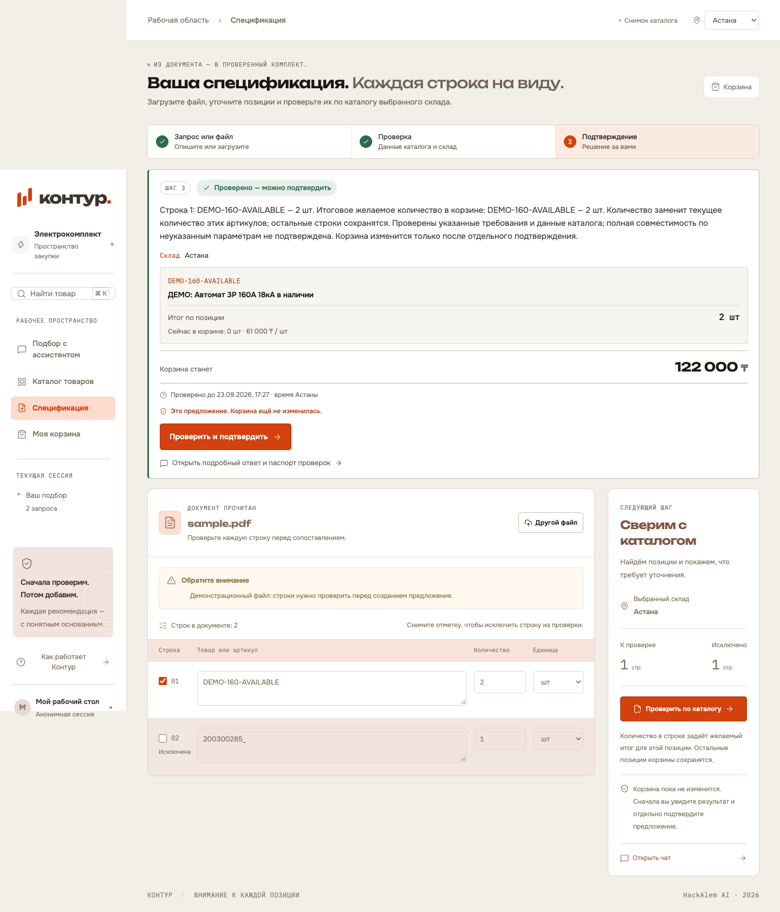

Загрузить
XLSX, DOCX, текстовый PDF. Названия, количество, единицы.
Закупщику нужно понять,
каким данным доверять.
Конфликт сохранён в карточке ekt.kz. Автоматически выбрать верное значение нельзя.
Наша задача: показать расхождение до изменения корзины.
Запрос или файл → проверяемые основания → явное подтверждение.
XLSX, DOCX, текстовый PDF. Названия, количество, единицы.
Каталог и выбранный склад. Конфликт блокирует весь список.
Исправить или исключить строку. Перепроверить здесь же.
Человек видит итоговый состав. Сервер проверяет его ещё раз.
Пока нет подтверждения, корзина остаётся прежней.
2 × 61 000 ₸
DEMO-160-AVAILABLE
Учебная позиция. Это стоимость корзины, экономия не измерялась.

Подтверждение → SQLite → перезагрузка → тот же состав.
Локальный разбор документов.
В live: смысл запроса и OCR через OpenAI.
Артикул, характеристики, цена, минимум и остаток выбранного склада.
Факты из каталогаКонкретный состав, итоговое количество, цена, склад и срок.
Корзина ещё прежняяПовторная проверка сервером → транзакция → корзина
Один FastAPI-процесс. Готовый React UI. Без ключей — fixtures и правила.
LLM не вычисляет стоимость и не разрешает покупку. Реальная оплата и резерв не выполняются.
Backend-теста прошли.
Проверены сборка и браузерный сценарий.
Позиций: 10 карточек ekt.kz
и 3 явно учебные позиции.
Чистый клон: файл → подтверждение
→ корзина → перезагрузка.
Работа подтверждена пользователем.
Не отдельный прогон Codex.
Живой OpenAI/OCR ещё не проверен. Офлайн-JPEG — точный учебный файл с записанным результатом. Каталог — снимок, корзина — локальная.
Права, полный каталог, единицы, документы и обновление остатков.
Реальная модель, OCR и правила хранения, удаления и передачи данных.
Время проверки списка и пропущенные расхождения — в сравнении с исходным процессом.
Сначала проверим.
Потом добавим.
Мовсар — интерфейс и интеграция · Даниял — backend и проверяемые правила
Дальнейшая интеграция заказа — после согласования API-контракта.